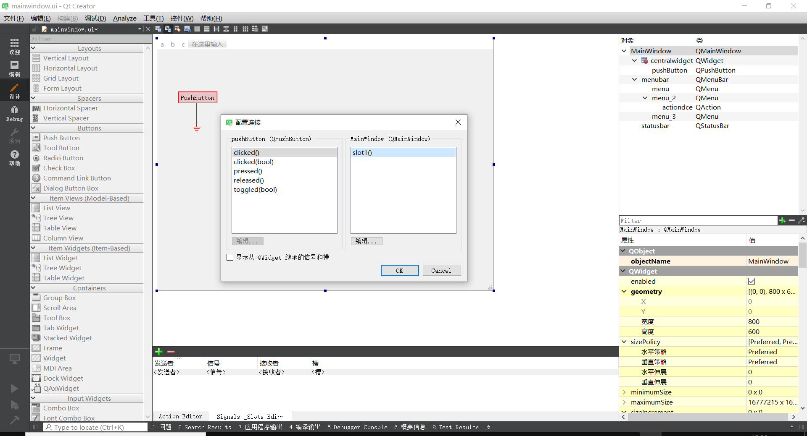
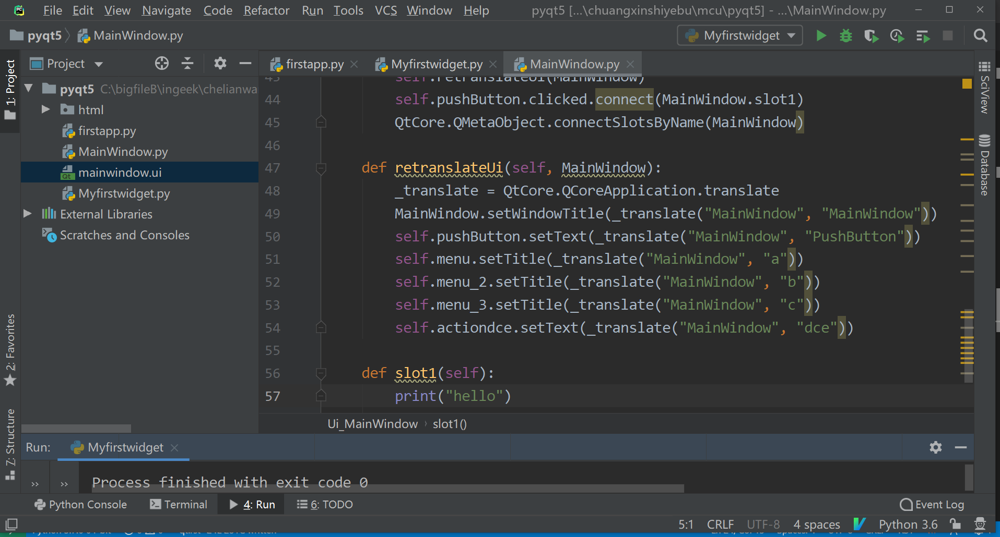

5.
qt
¶
5.1.
ui
¶
5.2.
菜单栏
¶
5.3.
信号与槽
¶
快捷键F4 F3进入和退出信号与槽添加功能
5.4.
点击按钮进入槽函数
¶

5.5.
转换为python文件
¶
5.6.
python中看到的slot1
¶
5.7.
手动添加slot1函数的实现
¶

sphinx
Navigation
Contents:
1. pyqt5
2. ui界面控件说明
3. python
4. 解析BO
5. qt
5.1. ui
5.2. 菜单栏
5.3. 信号与槽
5.4. 点击按钮进入槽函数
5.5. 转换为python文件
5.6. python中看到的slot1
5.7. 手动添加slot1函数的实现
6. dbc
7. docker
8. nginx
9. windows搭建web
10. embed
11. nrf52832
Related Topics
Documentation overview
Previous:
3.
python
Next:
6.
dbc
Quick search